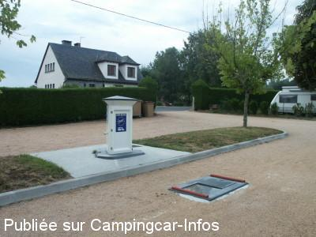

ASN = Aire de services avec stationnement nuit possible de :
LACAPELLE VIESCAMP
(N° 301)
Accès/adresse :
Place de la Gare
15150 LACAPELLE VIESCAMP
15150 LACAPELLE VIESCAMP
Latitude : (Nord) 44.92129° Décimaux ou 44° 55′ 16′′
Longitude : (Est) 2.26367° Décimaux ou 2° 15′ 49′′
Tarif : 2015
Stationnement gratuit
Services : 2 €
Paiement avec jetons
Type de borne : EURO-RELAIS
Services :


Restaurant Epicerie
Autres informations :
Ouverte toute l'année
5 emplacements à l'extérieur du camping municipal
Tel : +33 (0)471 463 171
Le 23/07/2012 par JPB 73

Le 21/08/2005 par dandufau
Le 21/08/2005 par dandufau
de
Sylvéric
le 02/08/2015 :
Petite halte fin juillet. Effectivement l'aire est juste à l'entrée du camping, propre, calme et plate. Par contre, le camping était vide, nous n'avons pas trouvé l'accueil. Nous avons passé la nuit seuls. Le lac est magnifique mais inaccessible d'ici car bordé de propriétés privées. Pour toucher l'eau, le plus près est les plages du Puech de l'Ouille, site remarquablement aménagé.
Petite halte fin juillet. Effectivement l'aire est juste à l'entrée du camping, propre, calme et plate. Par contre, le camping était vide, nous n'avons pas trouvé l'accueil. Nous avons passé la nuit seuls. Le lac est magnifique mais inaccessible d'ici car bordé de propriétés privées. Pour toucher l'eau, le plus près est les plages du Puech de l'Ouille, site remarquablement aménagé.
de
PRAT
le 06/07/2012 :
Une nuit passée sur cette aire en mai 2012. Très calme, et bien située. La vidange des eaux grises nécessite de bien "viser", comme le montre les photos. Seule remarque à faire. Merci à la commune!
Une nuit passée sur cette aire en mai 2012. Très calme, et bien située. La vidange des eaux grises nécessite de bien "viser", comme le montre les photos. Seule remarque à faire. Merci à la commune!
de
Gilou
le 10/05/2011 :
Sommes passés début mai 2011. Aire très calme. Une nuit paisible, bref que du bonheur. Merci Mme le maire.
Sommes passés début mai 2011. Aire très calme. Une nuit paisible, bref que du bonheur. Merci Mme le maire.
de
sicard
le 15/07/2010 :
Nous confirmons les commentaires déjà anciens mais toujours d'actualité. Par contre, on ne sait toujours pas qui distribue les jetons de la borne ?
Nous confirmons les commentaires déjà anciens mais toujours d'actualité. Par contre, on ne sait toujours pas qui distribue les jetons de la borne ?